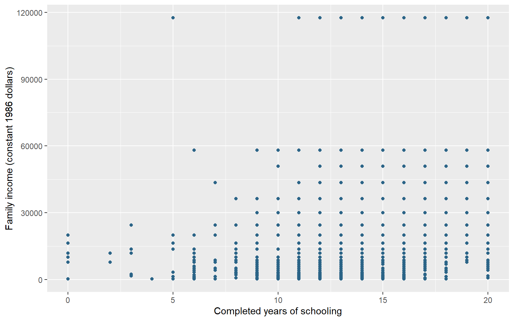
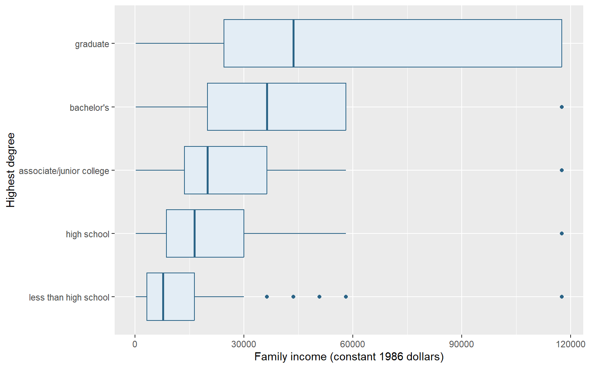
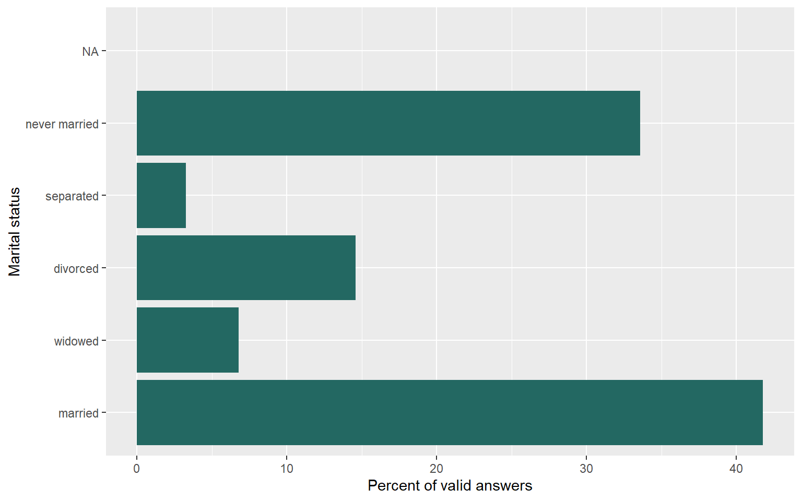
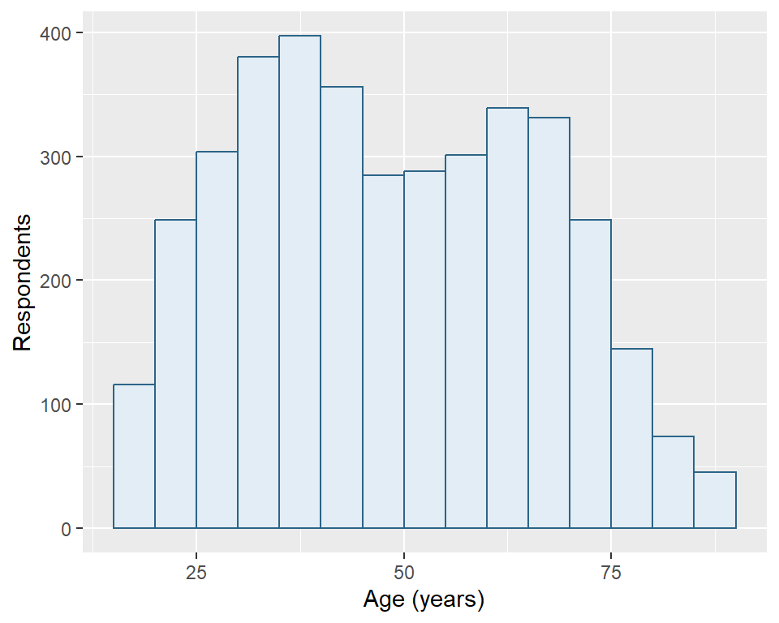
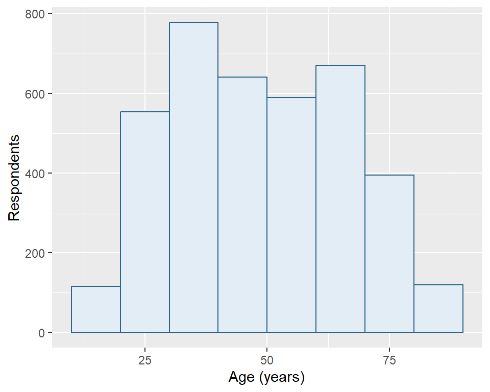
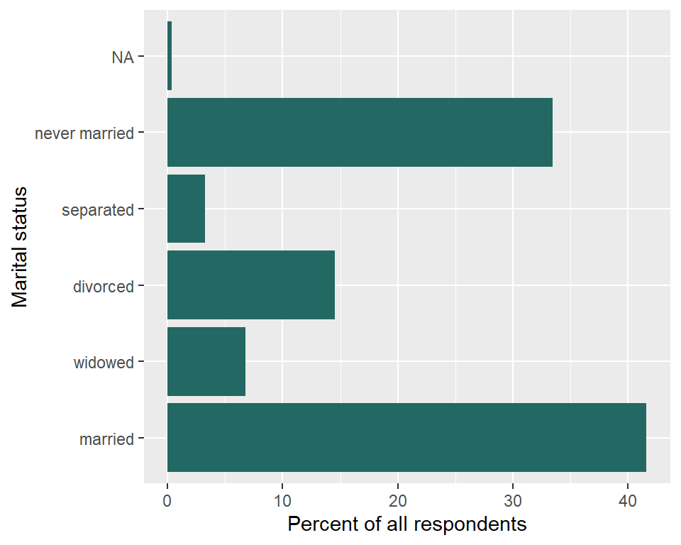

library(tidyverse)
library(tidystata)
gss24 <- readRDS("gss24.rds")11 Visualize data
A graph can reveal a pattern that a mean or percentage alone does not show. A scatterplot shows how two numerical variables vary together; a histogram shows the distribution of a numerical variable; a bar chart compares categories. Begin with a question about the observations, then choose marks that represent the quantities you want to compare.
By the end of this chapter, you will be able to:
- Build a graph from a dataset, variable mappings, and a geometric layer.
- Read relationships, numerical distributions, and category percentages.
- Label axes and identify which observations contribute to a graph.
- Explain how interval widths and percentage denominators affect a display.
- Optionally, compare income distributions across degree categories with boxplots.
The examples build on inspecting datasets, frequency tables from Chapter 8, and numerical summaries from Chapter 9. We introduce the plotting syntax here, using complete datasets as inputs. The introductory illustration is not a prerequisite. Later, Chapter 22 develops grouped figures, annual trends, presentation choices, and export.
Load tidyverse, which includes ggplot2, and tidystata, which supplies summ() and tab(). All examples use the prepared GSS extract introduced in Chapter 8. With gss24.rds saved in your project folder, readRDS() restores that saved R object; <- assigns it the name gss24. Appendix A gives the preparation recipe.
11.1 Schooling and family income
Do respondents with more schooling tend to report higher family incomes? In the same gss24 extract used for tables and summaries, educ records completed years of schooling and realinc records family income in constant 1986 dollars. Family income is based on brackets rather than exact dollar answers. Each point will represent a respondent with both coordinates recorded. Reuse the joint-coverage check from Section 10.3:
schooling_income <- gss24 |>
filter(!is.na(educ), !is.na(realinc))
nrow(gss24)[1] 3986nrow(schooling_income)[1] 3551The plot can position 3551 of 3986 respondents. We will supply the full source to the layer and explicitly omit unavailable coordinates; this has the same contributing sample as the checked selection. Missing income remains unknown.
A mapping connects a variable to a graphical role. aes() creates those instructions. Here x = educ means that horizontal positions use schooling, and y = realinc means that vertical positions use family income. The unquoted names identify columns that the plot will find in its dataset:
survey_mapping <- aes(x = educ, y = realinc)Assignment saves the two mapping instructions. They do not calculate income differences, modify the table, or draw a graph.
ggplot() receives the dataset and those mappings and returns a plot object. It establishes the plot’s inputs before choosing how to draw observations:
survey_plot <- ggplot(gss24, survey_mapping)The saved object has data and axis instructions, but no marks yet. A geometric layer chooses those marks. geom_point() adds one point for each row with both coordinates available. The + operator adds a layer to a plot; put it at the end of a continued line. Assign the updated result to keep the addition.
Set na.rm = TRUE in this layer to omit respondents that cannot be positioned because a coordinate is missing. This avoids a warning about that explained omission without changing gss24. color outside aes() sets one appearance for all points; the hexadecimal value specifies the book’s blue:
survey_plot <- survey_plot +
geom_point(color = "#2B6487", na.rm = TRUE)The plot now has points, but assignment keeps it from displaying before its labels are ready. Only the variables in aes() determine positions here; the fixed color does not represent another variable.
labs() supplies readable labels: its x and y arguments name the axes. Adding these labels to the saved object returns an updated plot, which we assign again. Type the object’s name only after this last step to display the labelled graph. Its caption identifies the survey and contributing sample.
survey_plot <- survey_plot +
labs(
x = "Completed years of schooling",
y = "Family income (constant 1986 dollars)"
)
survey_plot
Figure 11.1 shows substantial income variation at the same schooling level. A horizontal distance measures years of schooling; a vertical distance measures constant-dollar family income. Schooling is recorded in whole years and income has only 26 recorded values, so multiple respondents occupy the same coordinates. The visible dots therefore understate the number of respondents: a dot’s darkness or size does not count how many overlap. The grouped summaries in Section 9.4 make the income differences across educational groups easier to assess; this simple scatterplot does not display the frequency at each position.
This graph describes an unweighted association in the observed sample. It does not show that schooling causes a particular income increase, describe individual earnings, or establish the relationship in the population. We retain the same GSS extract for the age distributions and marital-status comparison below. The contributing respondents can differ because each plot uses the answers recorded for its own variables.
11.2 A distribution of ages
How are ages distributed among the GSS respondents with a recorded age? A histogram groups a numerical variable into adjacent intervals and counts observations in each interval. geom_histogram() supplies those counts, so we map only x = age. Its binwidth argument chooses the interval width in the units of age, here years. boundary = 0 aligns interval boundaries with multiples of that width. A boundary observation is assigned to one interval rather than counted twice.
First check how many ages are recorded. nrow() counts all respondents in the extract, while the summary’s n counts non-missing ages.
nrow(gss24)[1] 3986summ(gss24, age)# A tibble: 1 × 7
type n unique min mean sd max
<chr> <int> <int> <dbl> <dbl> <dbl> <dbl>
1 dbl 3859 72 18 49.0 17.7 89
The histograms will use 3859 of 3986 respondents, leaving out 127 whose age is missing. Both layers use na.rm = TRUE, so they omit the same missing ages from their counts. This does not change the saved extract.
Begin with five-year intervals. fill sets the interior color of the bars and color their outlines; both are constants outside aes(). We reuse the familiar one-variable mapping and plot construction, then add the new geom_histogram() layer:
age_plot_5 <- ggplot(gss24, aes(x = age)) +
geom_histogram(
binwidth = 5, boundary = 0, na.rm = TRUE,
fill = "#E3EDF5", color = "#2B6487"
) +
labs(x = "Age (years)", y = "Respondents")Each bar will count recorded ages in a five-year interval, with boundaries aligned to multiples of five. With these defaults, a shared boundary belongs to the interval ending there: age 20 goes in the interval above 15 through 20, while age 21 goes in the next interval. Adjacent intervals therefore do not count age 20 twice. Assignment saves the labelled plot for the captioned comparison below.
Now change only binwidth to 10. With boundary = 0 unchanged, the new intervals follow multiples of ten. The data, missing-age rule, and axis labels stay the same:
age_plot_10 <- ggplot(gss24, aes(x = age)) +
geom_histogram(
binwidth = 10, boundary = 0, na.rm = TRUE,
fill = "#E3EDF5", color = "#2B6487"
) +
labs(x = "Age (years)", y = "Respondents")A ten-year interval spans two adjacent five-year intervals. Predict how combining those counts changes bar heights before reading the two panels. Both finished objects remain available for reuse.
age_plot_5
age_plot_10

Both panels describe the same 3859 respondents. The ten-year bars generally contain more respondents because they span wider intervals, not because the second graph has a larger sample. The narrower intervals reveal more local variation; the wider intervals make broader patterns easier to see. Neither choice recovers information about people outside the sample or resolves missing ages.
The y-axis shows counts, not percentages. These are unweighted sample distributions. When presenting one version, state the interval width and keep it appropriate to the question. Do not change the width simply to make a distribution look smoother or more uneven without explaining the comparison.
11.3 Income across degrees [Optional]
How much income variation lies behind the educational-group summaries in Section 9.4? A boxplot compares numerical distributions across categories. Keep respondents with both income and degree recorded, then check each group’s contributing count with the familiar tabstat():
income_degree <- gss24 |>
filter(!is.na(degree), !is.na(realinc))
tabstat(income_degree, realinc, .by = degree,
.stat = "n", .missing = FALSE)# A tibble: 5 × 3
degree type n
<fct> <chr> <int>
1 less than high school dbl 287
2 high school dbl 1621
3 associate/junior college dbl 336
4 bachelor's dbl 783
5 graduate dbl 530
The plot uses 3557 of 3986 respondents. The five degree categories already have readable labels and their source order; no category construction is needed. Group sizes differ, so equally wide boxes will not mean equally many respondents.
Map income horizontally and degree vertically. geom_boxplot() calculates a separate box for each degree. Its line marks the median; its ends mark the lower and upper quartiles, locating the middle half by ordered positions. The interquartile range (IQR) is the upper quartile minus the lower quartile. Each whisker reaches the furthest observed value within 1.5 IQR below the lower quartile or above the upper quartile. Whiskers need not reach those limits exactly. Values beyond them appear as separate points.
income_degree_plot <- ggplot(income_degree, aes(x = realinc, y = degree)) +
geom_boxplot(fill = "#E3EDF5", color = "#2B6487") +
labs(x = "Family income (constant 1986 dollars)", y = "Highest degree")
income_degree_plot
Figure 11.3 shows higher medians alongside overlapping income ranges. Income comes from brackets, producing repeated values; the plot cannot recover variation within a bracket. Ties can place more than half the observations inside a box, and repeated points can overlap. Graduate respondents have no points beyond their whiskers, although their recorded incomes extend high. These points follow a group-specific rule; they are not automatic errors or a list of everyone with high income. The comparison describes this unweighted sample, not a causal effect of education.
11.4 Turn a frequency table into bars
What proportion of respondents with a recorded marital-status answer belong to each category? Begin with the familiar tab(). Supply gss24 and marital directly, then store the returned frequency table as marital_table.
marital_table <- tab(gss24, marital)
marital_table# A tibble: 6 × 6
marital n percent cum valid valid_cum
<fct> <int> <dbl> <dbl> <dbl> <dbl>
1 married 1659 41.6 41.6 41.8 41.8
2 widowed 269 6.75 48.4 6.77 48.6
3 divorced 579 14.5 62.9 14.6 63.1
4 separated 130 3.26 66.2 3.27 66.4
5 never married 1334 33.5 99.6 33.6 100
6 NA 15 0.376 100 NA NA
Each row represents a marital-status category, rather than an individual respondent. As in Chapter 8, percent uses every respondent as its denominator; valid uses only recorded answers. We want valid, whose denominator is 3971 respondents. The missing row counts the other 15 respondents, but its valid value is NA because it is not a recorded marital-status answer.
geom_col() draws bars whose lengths are already in the data. Map x = valid for bar length and y = marital for the category label. This horizontal arrangement gives the words room. By contrast, geom_histogram() calculated counts from individual numerical observations. Here the frequency table has already calculated the percentages.
Set na.rm = TRUE in geom_col() to omit the missing row’s undefined bar length. The missing label retains an empty position on the category axis, but has no bar. The valid percentages already exclude these respondents from their denominator; omitting the undefined bar does not recalculate the table.
marital_plot <- ggplot(marital_table, aes(x = valid, y = marital)) +
geom_col(fill = "#236862", na.rm = TRUE) +
labs(x = "Percent of valid answers", y = "Marital status")
marital_plot
Figure 11.4 shows that married and never-married respondents make up the two largest categories among valid answers. Their percentages, together with those of the other recorded categories, add to 100 apart from rounding. They describe this sample without survey weights. Mapping percent instead would answer a different question because its denominator includes missing answers.
Do not count the rows of marital_table to estimate how many respondents are married. One table row can summarize many people. Supplying category counts to a layer that counts rows again would discard the work already done by the frequency table. Check that the axis names the quantity actually mapped, whether count or percentage.
11.5 Review
ggplot()receives data,aes()maps variables, and geometric layers determine how observations are drawn.geom_point()shows relationships, whilegeom_histogram()counts numerical observations within chosen intervals.geom_col()draws precomputed values, so a percentage chart inherits its table’s denominator.- Optional:
geom_boxplot()compares distributions using medians, quartiles, whiskers, and points beyond whiskers. labs()supplies readable labels, and constants outsideaes()set a shared appearance.na.rm = TRUEomits missing values needed by a layer; it does not replace them or change the source dataset.- A graph’s interpretation depends on its observations, units, interval widths, and denominators.
We can now inspect, tabulate, summarize, and graph a dataset. The next part begins with Chapter 12, which creates and changes columns within a table. Chapter 22 later builds on these first plots to construct grouped figures and export them.
11.6 Exercises
- Read Figure 11.1. What do its horizontal and vertical distances mean? Can one visible point stand for several respondents? State the contributing sample and explain why the graph cannot establish a causal effect or identify individual earnings.
- Recreate the GSS age summaries and two histogram objects, using widths of five and ten years. Predict which plot will use more respondents and why its bar heights can differ. Retain the same interval boundary in both, then compare your predictions with the figures.
- Recreate the marital-status frequency table and valid-percentage bar object from a fresh GSS import. Identify its denominator. Predict what changes if you map
percentinstead ofvalid, including the missing row, then create that alternative with a matching axis label. - A researcher counts rows in
marital_tableand reports that count as the number of married respondents. Another addsgeom_histogram()to this table to plot its already calculated percentages. Diagnose both errors. Which object supplies respondents, which supplies categories, and which taught layer should draw precomputed percentages?
Worked answers
NoteInterpret the plotted observations
Horizontal differences represent completed years of schooling; vertical differences represent family income in constant 1986 dollars. Repeated schooling and bracket-based income values put multiple respondents at exactly the same location, so visible dots do not count respondents. The graph uses people with both measurements recorded, as checked in Section 10.3. It describes an unweighted sample association in reported family income. It does not isolate a schooling effect from other differences, represent individual earnings, or supply a survey-weighted population relationship.
NoteChange intervals, retain people
Load the prepared extract independently from the saved file in your project folder.
library(tidyverse)
library(tidystata)
answer_gss24 <- readRDS("gss24.rds")summ(answer_gss24, age)# A tibble: 1 × 7
type n unique min mean sd max
<chr> <int> <int> <dbl> <dbl> <dbl> <dbl>
1 dbl 3859 72 18 49.0 17.7 89
answer_age_5 <- ggplot(answer_gss24, aes(x = age)) +
geom_histogram(binwidth = 5, boundary = 0, na.rm = TRUE,
fill = "#E3EDF5", color = "#2B6487") +
labs(x = "Age (years)", y = "Respondents")
answer_age_10 <- ggplot(answer_gss24, aes(x = age)) +
geom_histogram(binwidth = 10, boundary = 0, na.rm = TRUE,
fill = "#E3EDF5", color = "#2B6487") +
labs(x = "Age (years)", y = "Respondents")Both use all 3859 respondents with a recorded age. A wider interval collects more ages into each bar and uses fewer bars. The interval choice changes how those same respondents are grouped; it does not add people. Compare shape with that changed grouping in mind.
answer_age_5
answer_age_10

NotePredict a denominator change
Use a fresh GSS import and load the package supplying tab().
library(tidyverse)
library(tidystata)
answer_gss24 <- readRDS("gss24.rds")answer_marital <- tab(answer_gss24, marital)
answer_marital# A tibble: 6 × 6
marital n percent cum valid valid_cum
<fct> <int> <dbl> <dbl> <dbl> <dbl>
1 married 1659 41.6 41.6 41.8 41.8
2 widowed 269 6.75 48.4 6.77 48.6
3 divorced 579 14.5 62.9 14.6 63.1
4 separated 130 3.26 66.2 3.27 66.4
5 never married 1334 33.5 99.6 33.6 100
6 NA 15 0.376 100 NA NA
nrow(answer_gss24)[1] 3986nrow(answer_marital)[1] 6answer_marital_plot <- ggplot(answer_marital, aes(x = valid, y = marital)) +
geom_col(fill = "#236862", na.rm = TRUE) +
labs(x = "Percent of valid answers", y = "Marital status")For a comparison that uses all respondents, map percent instead, and change the axis label to state that denominator:
answer_overall_plot <- ggplot(answer_marital, aes(x = percent, y = marital)) +
geom_col(fill = "#236862", na.rm = TRUE) +
labs(x = "Percent of all respondents", y = "Marital status")The recorded categories’ overall percentages sum to less than 100 because missing answers occupy the remaining share. The missing row now has a known overall percentage and receives a bar. The source frequency table is unchanged.
The denominator for valid is 3971 respondents with a recorded marital-status answer. The table has 6 rows: five recorded categories and one missing row. Each row summarizes a different number of respondents. Counting those rows describes categories, not people. geom_col() preserves the valid percentages; its missing-value argument omits the undefined bar, leaving its category position empty.
answer_marital_plot
answer_overall_plot
NoteDiagnose the observation unit and layer
A row in gss24 represents one respondent; a row in marital_table summarizes a marital-status category. nrow(marital_table) therefore counts category rows, including the missing row, rather than married people. Read the married category’s n column in the frequency table for its respondent count.
geom_histogram() groups a numerical variable into intervals and counts input observations. The frequency table has already calculated the percentages we want to draw. Use geom_col() with x = valid and y = marital, as in Answer 3, and label the axis as percent of valid answers. That layer draws the precomputed values without counting category rows again. Changing layers alone does not choose a denominator; the mapped table column does.